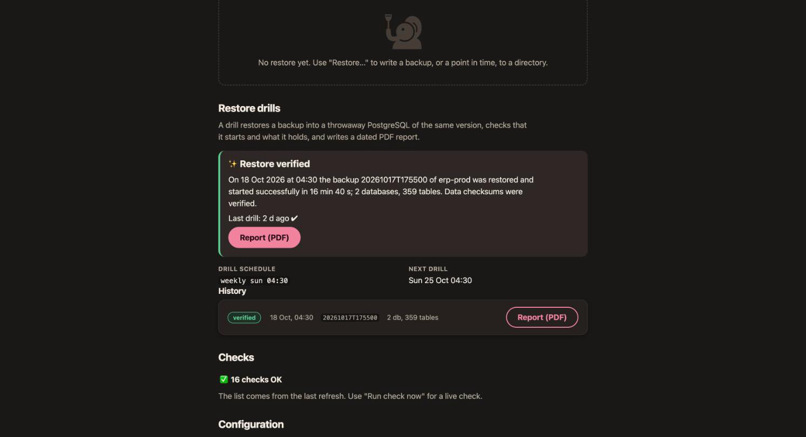

Restore drills and reports
A backup you have not restored is a hope. A restore drill is pgCellar restoring one of your backups for real, every week, on its own, starting the copy, looking inside it, and writing a dated PDF that you can hand to an auditor.

What a drill does, step by step
A drill never touches the production server. It works on a copy of a backup, under recoveries.dir. One drill at a time, never during a backup of the same server (a backup of that server waits while its drill runs).
| Step | What happens |
|---|---|
| 1. Restore the backup | barman recover into <recoveries.dir>/<server>/drill-<timestamp>/. The latest backup with status DONE, target latest. |
| 2. Find the PostgreSQL version | Reads PG_VERSION of the restored directory to choose the binaries of the same major version. |
| 3. Prepare the throwaway copy | Appends a few settings to the postgresql.auto.conf Barman wrote (see below). |
| 4. Start PostgreSQL | pg_ctl start -w -t 300 from /usr/lib/postgresql/<major>/bin, on a free port between 54400 and 54499. |
| 5. Wait for the end of the recovery | pg_isready until the copy accepts connections, then SELECT pg_is_in_recovery() must answer f. Limit: drills.recovery_timeout. |
| 6. Look inside the databases | Runs queries: version(), the replay LSN, every non-template database with its size and its number of tables. |
| 7. Stop PostgreSQL | pg_ctl stop, fast, then immediate if needed. |
| 8. Verify the data checksums | pg_checksums --check on the stopped copy, only if the cluster uses checksums. Skipped, with the reason, if not. |
| 9. Clean up | Removes the directory, unless it is the last good drill and keep_last is on. |
Why checksums come after the stop: pg_checksums --check refuses a cluster that was not shut down cleanly, and the control file of a restored base backup says "in production" until PostgreSQL has stopped once.
What the throwaway copy is configured with. It listens on 127.0.0.1 only, with a trust rule on its own socket and TCP rejected. It runs with archive_mode = off, max_connections = 10, shared_buffers = 64MB, max_wal_senders = 0, autovacuum = off, logging_collector = off, ssl = off, jit = off, hot_standby = off, an empty shared_preload_libraries (so an extension library missing from the image cannot stop the check), and the locale messages set to C. None of this changes your data; it only lets a small copy start anywhere.
What the check proves, and what it does not. It proves that the backup restores, the WAL replays, PostgreSQL starts on it, the databases are there, their tables can be counted, and, when checksums are on, no page is damaged. With drills.verify_tables: true it also runs SELECT count(*) on every table (slow on large databases) and sums the rows per database. It does not compare the data with the source, and it does not test your application. A source that needs an extension library to replay WAL is started without it and is not tested for it. Configuration files outside the data directory (Debian's /etc/postgresql) are not handled.
When a step fails, the report keeps the earlier steps, the error text and the last 25 lines of the PostgreSQL log of the copy. pgCellar still stops the copy and removes the directory.
Switching drills on
Drills are scheduled per server, in pgcellar.yaml:
servers:
- name: pg-main
drills:
schedule: "weekly sun 04:30" # same syntax as the backup schedule; empty = none
drills:
enabled: true # false stops the scheduled drills; manual ones stay possible. Absent = true
timeout: 30m # a whole drill, restore included
recovery_timeout: 10m # wait for the copy to finish replaying WAL
keep_last: true # keep the data directory of the last good drill. Absent = true
verify_tables: false # true = SELECT count(*) on every table
max_age: 192h # the server turns orange when the last good drill is older (8 days)
bin_dir: /usr/lib/postgresql
Do not write enabled: false unless you mean it; the absent key already means "on". A drill schedule only takes effect when the server has one.
Choose a time after the nightly backup. The schedule uses the same syntax as backups (chapter 5). The drill schedule is edited in pgcellar.yaml, not in the server form; the form keeps it when you save.
To run one now: Run a drill now in the Restore drills section (operator), or:
curl -X POST -H "Authorization: Bearer $KEY" http://localhost:8080/api/v1/servers/pg-main/drills
The body is optional. By default the drill uses the latest DONE backup and target latest. You can give backup_id, target (latest, backup_end, time) and target_time. The call answers 202 with a run_id; the run output lists every command with its answer. It returns 409 while another drill or a backup of the same server runs.
A server turns orange in Status when its last drill failed, or when no drill has passed for max_age. A server that never had a drill is not orange: its first due time is not late. Metrics: pgcellar_last_drill_ok{server} and pgcellar_last_drill_age_seconds{server}.
What the image must contain
A drill starts the restored copy with the PostgreSQL server binaries of the same major version as the source. The Docker image installs them for the versions in the build argument PG_MAJORS (default 16 17 18), as binaries only: no cluster, no service. If the source's major version is not there, the drill fails at step 2 with "PostgreSQL binaries are not in this image". Rebuild:
docker build -f deploy/Dockerfile -t pgcellar:dev --build-arg PG_MAJORS="15 16 17" .
Sizes, measured on arm64 (uncompressed): 312 MB without the server binaries, 639 MB with 16 17 18. A single version is about 170 MB more than none. Fewer versions, smaller image.
Locales
A restored data directory keeps the collation and ctype locale of its source, and PostgreSQL refuses to start on a locale the system does not have. A source cluster created in a postgres:16-alpine or postgres:16 container is typically en_US.utf8.
The image generates a fixed list from the build argument PG_LOCALES: C.UTF-8 en_US.UTF-8 en_GB.UTF-8 fr_FR.UTF-8 fr_BE.UTF-8 nl_NL.UTF-8 nl_BE.UTF-8 de_DE.UTF-8 es_ES.UTF-8 it_IT.UTF-8 pt_BR.UTF-8. That adds about 23 MB. If your cluster uses another one, add it (name as in /usr/share/i18n/SUPPORTED) and rebuild:
docker build -f deploy/Dockerfile -t pgcellar:dev \
--build-arg PG_LOCALES="C.UTF-8 en_US.UTF-8 pl_PL.UTF-8" .
A start that fails on a locale is reported as: "The cluster uses locale X, which this image does not have. Rebuild with PG_LOCALES including Y (see deploy/Dockerfile)." Find your cluster's locale with SELECT datcollate, datctype FROM pg_database;.
Disk and memory
A drill needs room for the database plus its WAL under recoveries.dir. With keep_last: true the last good copy of each server stays there, so you can look at it; du -sh <recoveries.dir>/*/drill-* tells what it costs. Set keep_last: false if the disk is tight.
RAM: a drill adds some tens of MB (the copy runs with shared_buffers = 64MB). Drills never overlap.
Only the last successful copy is ever kept: the previous kept copy is removed when a new drill passes, and a failed drill never touches it. A drill-* directory that no record points to and that is older than a day (a restart during a drill) is removed by the daily purge. Records and reports are never purged; they weigh a few KB each.
The PDF report
Every drill writes a PDF, passed or failed:
<recoveries.dir>/<server>/reports/drill-<timestamp>.pdf
It opens from the server page (Report (PDF), operator role), from GET /api/v1/drills/{id}/report, and it is on the host if you mapped the folder. It contains:
- a banner, RESTORE VERIFIED or FAILED, and the verdict in one sentence;
- the drill in a table: server, source backup, recovery target, date, duration, PostgreSQL version, WAL position reached (LSN), restored size, data checksums, who started it, and the run number;
- the steps, with the result and the duration of each, and a note (the failing step and the error text when there is one);
- the databases found in the copy, with size and number of tables, and the rows counted when
verify_tablesis on; - for a failed drill, "What went wrong": the error and the end of the PostgreSQL log of the copy;
- a closing paragraph that says what the report records, and a footer with the fingerprint.
The report is written by pgCellar's own small PDF writer, with no dependency. Each file is read back the way a viewer would start it (header, cross-reference table, every offset and stream length) before it is stored.
The fingerprint
The footer carries SHA-256 of the report content: the hash of the text of the body, in the order it is drawn. It is also stored with the drill record, and returned by the API (details.fingerprint). To check a report, compute the hash of its text and compare it with the record. This detects a changed text. It does not detect a changed layout, and it is not a digital signature: anyone with write access to the report folder could produce a new file and a new hash. If you need non-repudiation, copy the PDF and the fingerprint to a system you do not control, and sign them there.
Reading a failed drill
The server page shows the last result large ("Restore verified" or "Restore drill failed"), the history, and the failing step. The run behind it holds the whole journal: each command with its output, step by step. Chapter 13 lists the usual causes: a missing locale, a missing major version, a noexec temporary directory, a source that needs an extension.